| |
East Coast Trip 2021
Lake Compounce Six Flags New England New York City American Dream Coney Island Six Flags Great Adventure
Casino Pier & Playland's Castaway Cove Dorney Park Cedar Point Kings Island Columbus Zoo & Waldameer Kennywood
Idlewild & Lakemont Park Hersheypark Knoebels
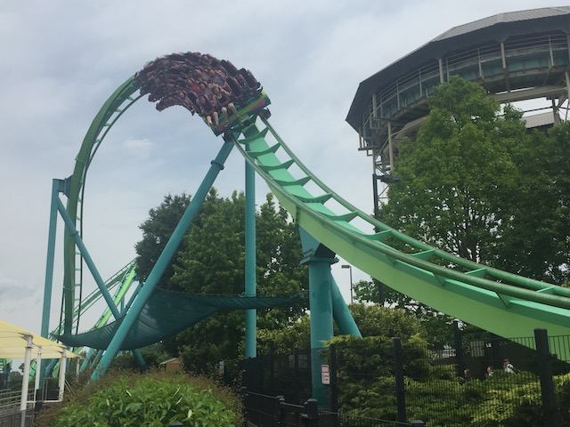
Well, we're done with New Jersey. Time to officially venture off into the Midwest. Oh, and hello Philadelphia.
But of course, we're not doing a straight drive from New Jersey to Ohio. We gotta take a theme park break. So.....time for some time at Dorney Park.
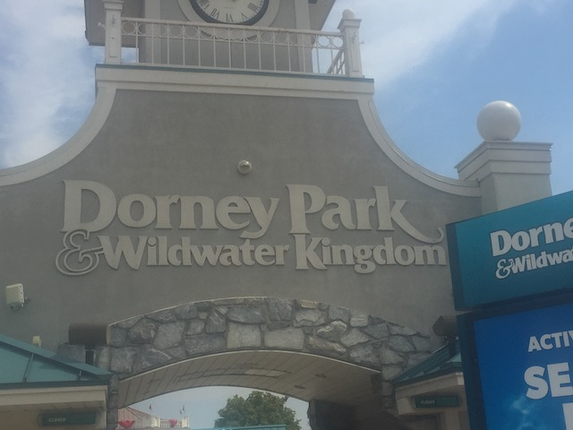
Dorney Park is interesting as.....this is a park that I visited a while ago. And yet, despite my last visit being 13 years ago, they still haven't added ANYTHING NEW (coaster wise). So....yeah. This is gonna be a bit of a retreading day.
I keep hearing that it's actually the waterpark that really stands out here and is the big draw for most people. Maybe someday, I'll check out the waterpark here. But for now....we're just sticking to roller coasters.
Just to let you know, this is a Cedar Fair park. There are MANY more trash cans coming later.
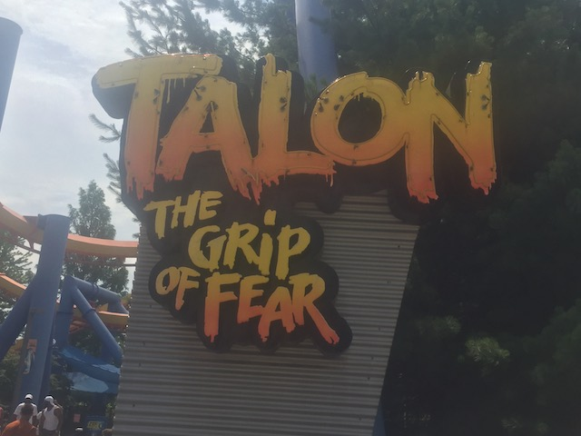
First things first, let's get my most controversial opinion out of the way. We're back to Talon.
Gee. I wonder if we'll have a problem with crowds during our visit to Dorney Park?
I've been calling this ride overrated, and the East Coast version of Silver Bullet for the past 13 years. After reriding it today, I can safely say that my thoughts on Talon haven't changed AT ALL!
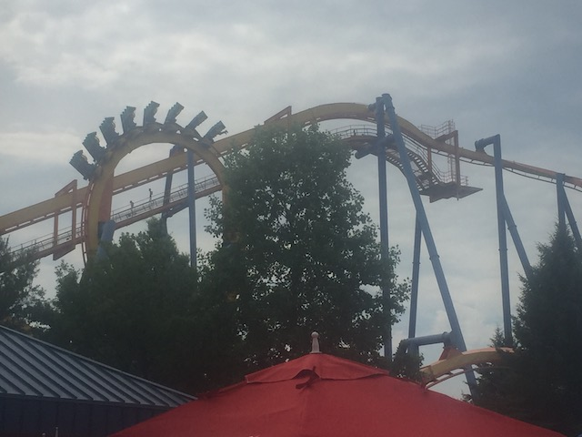
Now don't get me wrong. It's still a fun ride that I enjoyed. And much like Silver Bullet, it seems to have a couple of forceful pockets towards the end and has gotten better with age. But yeah. It still TOTALLY has the vibe of "East Coast Silver Bullet".
 I know it's dead here. But let's just get it out of the way. Just in case (plus, we're right by it).
I know it's dead here. But let's just get it out of the way. Just in case (plus, we're right by it).
Luckily, this park is dead. Otherwise, this would be real problem with capacity.
OK, this ride definately got better. It's still not amazing or as brutal as the European Mice (or the Lagoon Mouse). But at least it now seems to be an average Wild Mouse instead of one of the worst and lamest Mouse coasters.
Ooh. Random Dorney Park Food Truck. I honestly wouldn't be surprised if THAT was the best food in the park.
All right. That's enough small rides and random crap. Back to the major coasters. And we're at Voodoo (I know they renamed it Possessed, but f*ck it! I'm still using the old name. SO MUCH BETTER!!!!).
You know, I've always wanted to ride an Impulse coaster in the very front row. But never wanted to wait the extra long line for the front. Well, thanks to Dorney Park's lack of crowds (BTW, today is a Summer Saturday), we now can. Really is much better up there.
These rides are sadly becoming more rare. So hopefully Dorney Park keeps theirs. This park is so bare that they really can't afford to get rid of another coaster.
 Sadly (but as I expected), the holding brake offically no longer works on the back spike.
Sadly (but as I expected), the holding brake offically no longer works on the back spike.
If you thought the Knotts La Revolution was a weak frisbee, you should hop on the Dorney Park. Didn't think I'd EVER see a weaker frisbee than that. And yet, here we are.
 OK. Time for another one of the Morgan Hypers.
OK. Time for another one of the Morgan Hypers.
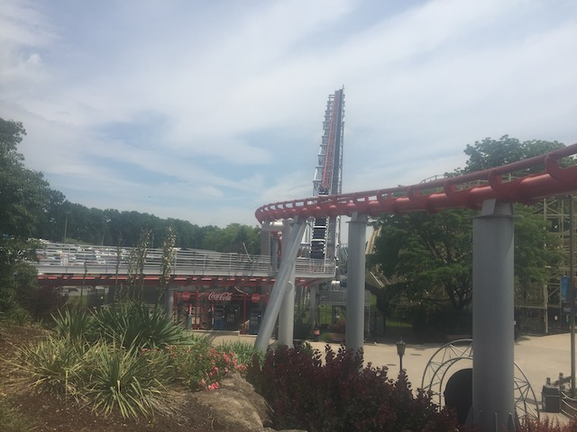
So amazingly, there was a lot of drama in the station of this ride (And no, it wasn't more cringy drama with a rude bitchy ride operator that was FAR bigger than it should've been). So we saw this family trying to force their son on the ride. This kid CLEARLY doesn't want to ride. But his parents were just absolutely DRAGGING him on it as he was BAWLING and genuinely seemed traumatized. It was so much that even I was noticing and shaking my head. #ParentsOfTheYear. Also, Scott & Steve, I hope you enjoyed the showers on your ride. >=)
I'm not sure why, but THIS one for some reason, is just a lot more fun than the other Morgan Hypers, Mamba & Wild Thing (excluding the Morgan Giga since.....Steel Dragon unquestionably beats this despite their very similar layout).
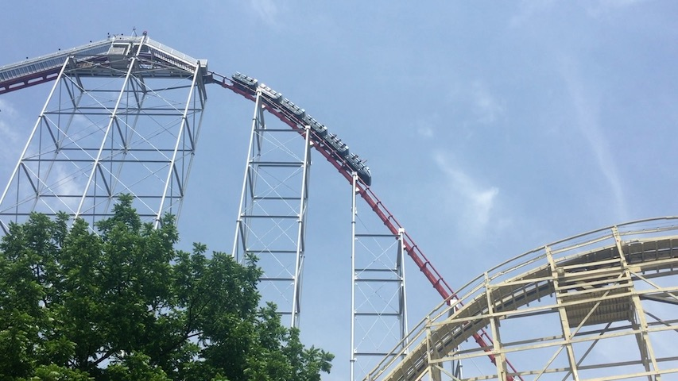
For some reason, I just feel more speed on this one.
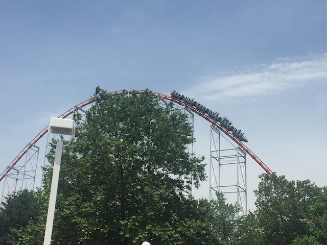
Also, there's more airtime. I think not being in a really bad mood made me like the ride a lot more this time around.
 Yeah. Your ass WILL be out of the seat for this portion of this ride.
Yeah. Your ass WILL be out of the seat for this portion of this ride.
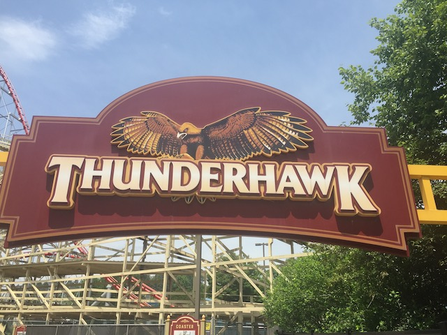
OK. Let's move onto their intersting woodie, Thunderhawk.
So Thunderhawk has a really interesting history. It's been around for....almost 100 years at this point. And it was onced ranked one of the best coasters in the world (I know this is in the 1920s, but even so, it feels really weird and jarring that THIS was once considred one of the best coasters ever)
Dear Dorney Park, go back to your roots and BRING BACK THE CLOWN MASCOT!!! It stands out and gives the park a unique edge that makes it stand out. Plus, with all the people afraid of clowns, he'd make a GREAT maze for Dorney Park's Haunt Event. #JustDoIt
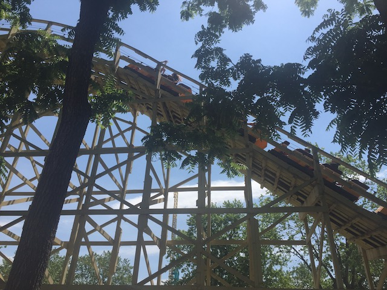
It's sad to see this ride trimmed to death as....you can tell that it's a shell of its former self.
 Yeah. Remove the trims and run this with classic PTC trains with buzz bars, and.....I could EASILY see this skyrocketing towards the top of the Dorney Park coaster collection.
Yeah. Remove the trims and run this with classic PTC trains with buzz bars, and.....I could EASILY see this skyrocketing towards the top of the Dorney Park coaster collection.
OK. I sure as hell don't remember this river from my last visit. But I like it. It gives the park some much needed atmosphere.
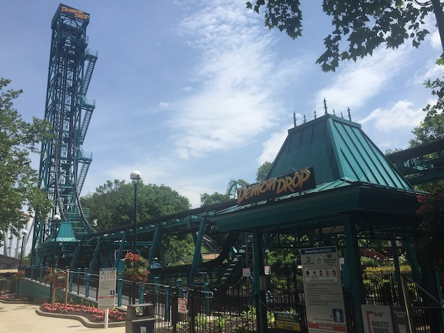
So the ONE thing that Dorney Park added since my last visit that interested me was Demon Drop. I know it's a hand-me-down from Cedar Point and this park is REALLY known for their hand-me-downs. And I REALLY like the Intamin 1st Generation Drop Towers. It's a shame that they're pretty rare and mostly reside outside America. Very happy to be getting another one under my belt.
ARE YOU F*CKING SERIOUS!!? IT'S CLOSED!!? GOD DAMN IT!!!!
So despite being an out of state park that I haven't visited in over a decade, I really feel like this visit is really similar to my ordinary and mundane visits to SFMM & KBF. OK. Not quite since....I did make it a priority to get on all the major coasters. But we EASILY accomplished that and it just felt like a mild mannered laid back visit to the park since.....there's nothing new here, and despite not having been since 2008, I feel like EASILY conquered Dorney Park (aside from the one new-for-me ride I was most excited about riding being closed). Hell, the park kind of reminds me of Six Flags America with how dead it is and how easy it is to get on everything. Except....the coaster collection at SFA is superior to Dorney Park's coaster collection #SorryNotSorry. I REALLY hope they add something new for my third visit cause....THIS PARK F*CKING NEEDS IT!!!
 Oh wait. It turns out that there ACTUALLY is a new credit for me to get at Dorney Park today.
Oh wait. It turns out that there ACTUALLY is a new credit for me to get at Dorney Park today.
Yeah. Even by kiddy coaster standards, this was a peice of sh*t. One and done for me.
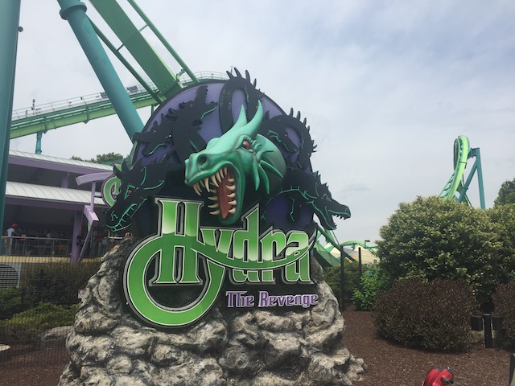
Oh wait. There's still a major coaster at Dorney Park we missed. Gotta hit that up.
I've always had a real soft spot for Hydra and consider it to be one of the most underrated B&Ms. So I will admit that I'm really happy to be getting back on this ride.
 Hey! Do you like hangtime!? If so, then you're gonna LOVE this ride.
Hey! Do you like hangtime!? If so, then you're gonna LOVE this ride.
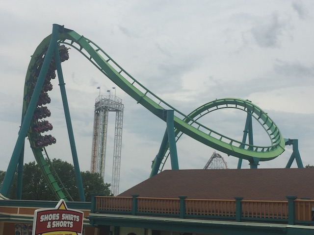
Hydra rides much like Scream or Riddlers Revenge on a really cold day and they're both running really slow. You just slide around and really have a fun time. Except Hydra is that way all year round. It may not have any whip, but the hangtime is just too good.
Reride on Talon since....other people seem to like it a lot more than me. And hey. There's no line. Why not?
So I know this was a short park visit, but I really feel like we've conquered Dorney Park. And I'd rather get started on our really long drive from Allentown, PA to Sandusky, OH (I wonder what we're doing tomorrow?). And I know I really don't like this chain, but they don't have any in California and....it deserves another chance after 11 years.
And....it was good. Sure, I still rank it down towards the lowest tier as far as Fast Food goes and this is NOT something I want to reguarly have. But I will admit that I enjoyed White Castle more this time around.
So we stayed at this tiny little local hotel. And.....it was a nice little place. We even chatted with the owner and petted his cat (very friendly little fellow).
Cedar Point
Home
|